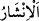
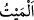
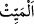

Bahru’l-ulûm’da şöyle denilmektedir: Allah yeri size, üzerine oturabileceğiniz,
uyuyabileceğiniz, sizden birinin yatağında, beşiğinde veya döşeğinde dönüp durduğu
gibi serbest dolaşıp deverân etmeniz için mesken yaptı.
Âyetteki “sübül”, sebîl kelimesinin çoğuludur. Bu da bilinip yürünen yol demektir.
Râgıb’ın ifâdesine göre “sebîl”, kolay yürünen yol demektir. Yani varacağınız yere
gitmeniz, istediğiniz belde ve diyarlara doğru seyahat etmeniz yahut asıl maksad olan,
tevhidi düşünerek hidâyet bulmanız için size yollar yaptı.
11. Gökten bir ölçüye göre suyu indiren O’dur. Biz onunla (kupkuru), ölü
memlekete hayat veririz. İşte siz de böylece (mezarlarınızdan) çıkarılacaksınız.
“Gökten bir ölçüye göre” kullara ve ülkelere faydalı olup zararlı olmayan “suyu
indiren O’dur.” O, suyu ihtiyaç ve maslahata uygun bir ölçüde indirir. Yani bu ne tufan
gibi boğacak kadar fazla, ne de zirâat ve benzeri diğer zarurî işlere yetmeyecek kadar az
olur. Genel olarak âdetullah ve sünnetullah böyledir. Bazen hikmet gereği sel ve âfet
meydana gelip insanlara zarar verdiği de olur. Bu durum yirmi yahut otuz yılda bir olur.
Böylece kullar hem imtihan edilir, hem de isyân ve günahlara karşılık cezalandırılmış
olur.
“Biz onunla” suyla, bitki ve bereketten tamamen yoksun, kupkuru “ölü memlekete
hayat veririz.” __WORD__/ölüyü diriltmek, ölüye hayat vermek demektir. “__WORD__/meyt”
kelimesi şeddeli olan “__WORD__/meyyit” kelimesinin tahfifli şeklidir. Yani bu belde verim
ve bitkiden tamamen boş durumdadır. O beldede verimin olmaması bedende hayatın
olmamasına benzetilmiştir. “ /meyten” kelimesinin müzekker olması ise burada
“belde” kelimesinin beled, mekân ve fezâ mânâlarında olmasındandır.
Müftî Sa’dî şöyle demiştir: En iyisini Allah bilir de, burada “beled” kelimesinin
“beldetün” olarak müennes, “meyyit” kelimesinin müzekker oluşu, beledin hâlinin son
derece zayıf olduğuna, “biz dirilttik” ifâdesindeki azamet nûnuyla da bu diriltme işine
çok önem verildiğinin belirtilmesine ve bu işin şânının yüceliğini bildirmeye işâret
vardır.
“İşte siz de böylece çıkarılacaksınız.” Yani gerçekte yerden bitki çıkarmak olan bu
diriltme gibi sizde kabirlerinizden diriltilip canlılar olarak çıkarılacaksınız. İnsanların
diriltilmesini ölü beldenin diriltilmesine benzetmek, mutlak olarak Allah’ın kudret ve
hikmetine delâlet ettiği gibi aynı şekilde Allah’ın kıyâmette yeniden dirilişe kadir
olduğuna da delâlet eder. Bitkiyi çıkarmayı ölüleri diriltmek anlamındaki “inşâr” diye
tâbir etmek, insanları diriltmeyi ise “çıkartmak” diye tâbir etmek, bitkiyi bitirmenin